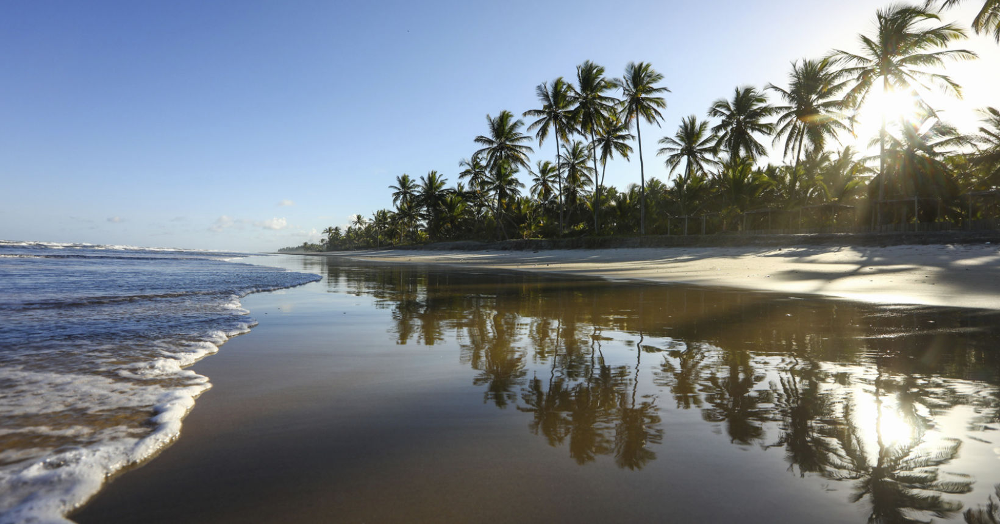

Descobrindo as Praias do Nordeste
O Nordeste brasileiro possui algumas das praias mais bonitas do mundo. Com águas cristalinas, areia branca e um clima ensolarado, é o destino perfeito para quem busca relaxar e aproveitar a natureza ao máximo.
Durante nossa viagem, exploramos diversas praias incríveis. A culinária local também é um destaque à parte, com pratos à base de frutos do mar, acarajé e tapioca que deixam qualquer um com água na boca. Recomendo muito a visita!